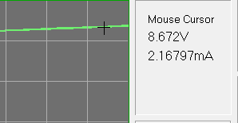

|  | When the mouse
cursor is moved over the trace plot area, it changes to a cross hair
style. Clicking anywhere in the plot area will return the voltage and
current for that location. The values are printed in the Mouse Cursor
display area. For X-t displays, voltage and current are plotted in the
vertical direction. The current and voltage for the cursor vertical
position are displayed. So, choose the value of
interest. For a data point tracking cursor, see Cursor Functions. Main |